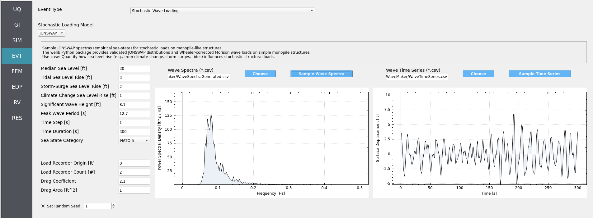

2.4.3. Stochastic Wave Loading
Sample JONSWAP sea states and compute Wheeler-corrected Morison loads on an assumed monopile-like structure. The module builds a wave power spectral density (PSD) from your inputs (e.g., significant wave height, peak period), samples a wave elevation time series at the structure site, and then evaluates vertical stacks of load recorders along the monopile. These loads are later mapped onto full structural models (e.g., in OpenSees) in the SimCenter workflow to determine structural response.
Warning
The JONSWAP spectrum was derived from North Sea field data and is conditionally applicable. It can be reasonable for North Atlantic offshore conditions (e.g., Maine/Norway) under appropriate sea states, but it is a placeholder that advanced users may replace with a more site-specific spectrum.
The implementation uses a validated Python backend (welib) for JONSWAP and
Wheeler-corrected Morison loading and is designed to run quickly (tens-hundreds
of samples typically complete in minutes).
2.4.3.1. GUI at a Glance
Left column — All input parameters.
Center plot — Wave Spectra (PSD vs Frequency). Click
Sample Wave Spectrato build the JONSWAP spectrum from the current parameters.Right plot — Wave Time Series (Surface Displacement vs Time). Click
Sample Time Seriesto synthesize a realization of the free-surface elevation.
{kind=link}

Fig. 2.4.3.1.1 Stochastic Wave Loading GUI in HydroUQ v4.2.0
2.4.3.2. Parameters
Note
Any parameter can be turned into a Random Variable by entering an alphabetic name instead of a number. Then define its distribution in the Random Variables (RV) sidebar to propagate hydrodynamic uncertainty through your workflow.
Water Level (ft)
Parameter |
Description |
|---|---|
Median Sea Level |
Reference water level about which fluctuations occur. |
Tidal Sea Level Rise |
Tidal offset relative to the median level. |
Storm-Surge Sea Level Rise |
Event-based surge offset. |
Climate Change Sea Level Rise |
Long-term mean sea-level shift. |
Sea State
Parameter |
Description |
|---|---|
Significant Wave Height (ft) |
JONSWAP input height ( |
Peak Wave Period (s) |
JONSWAP peak period ( |
Sea State Category [NATO 1–5] |
Deprecated. Shown for legacy compatibility; prefer explicit |
Deprecated since version The: Sea State Category control is legacy-only and may be removed in a future release.
Time Discretization
Parameter |
Description |
|---|---|
Time Step (s) |
Sampling interval for the synthesized time series (e.g., |
Time Duration (s) |
Total simulated duration (e.g., |
Warning
Using an extremely small Time Step (e.g., 0.001 s) or very long
Time Duration (e.g., 100000 s) will cause unnecessary runtimes and
heavy I/O. Typical choices: Δt = 1 s and duration 5-60 minutes.
Load Recorders
Parameter |
Description |
|---|---|
Load Recorder Origin (ft) |
Horizontal location for the recorder stack. |
Load Recorder Count (#) |
Number of vertically distributed recorders. |
Important
The Load Recorder Count here must equal the number of mapping nodes defined for the OpenSees structure in your structural module to ensure 1:1 load mapping.
Hydrodynamics
Parameter |
Description |
|---|---|
Drag Coefficient |
Morison drag coefficient ( |
Drag Area (ft^2) |
Projected area used with drag calculations for the monopile segment. |
Stochastic Controls
Parameter |
Description |
|---|---|
Random Seed (optional) |
Set for reproducibility; leave blank to draw a new random realization. |
2.4.3.3. Typical Workflow
Enter water-level, sea-state, time, recorder, and hydrodynamic parameters.
Click ``Sample Wave Spectra`` to generate the JONSWAP PSD from inputs.
Click ``Sample Time Series`` to synthesize a surface elevation realization.
The module computes Wheeler-corrected Morison loads at each recorder along the monopile for the sampled elevation.
Review the spectra and time-series plots; repeat with new Random Seed(s) or RV-defined parameter sets to study variability.
2.4.3.4. Best-Practice Guidelines
Time resolution: Aim for at least 10–20 samples per peak period (
Δt ≤ T_p/10toT_p/20). Oversampling beyond that rarely improves loads.Frequency resolution: Duration controls frequency bin size (
Δf = 1/T). Choose 20–60 min to resolve the peak and energetic tail.Multiple realizations: Use distinct Random Seeds (or RVs) to bracket variability of extreme and RMS loads.
Hydrodynamic consistency: Ensure Drag Area and C_d reflect the monopile segment being represented and use consistent units.
Mapping parity: Keep Load Recorder Count synchronized with structural mapping nodes to prevent mismatches downstream.
2.4.3.5. Example Use-Cases
Assess resilience of a North Sea offshore structure under uncertain sea states by sampling distributions for
H_sandT_pand comparing load envelopes across realizations.Design load sensitivity study: Evaluate how changes in Drag Coefficient (e.g., due to marine growth or surface roughness) alter peak and fatigue-relevant load statistics for a given sea state.
Quantify the effect of sea-level rise (tidal, surge, climate) on stochastic monopile base shear and overturning moments by varying the water-level components while holding sea state fixed.
Operational forecasting scenario: For a planned maintenance window, sample short-duration sea states around the latest forecasted
H_s/T_pto estimate likely ranges of monopile loads during operations.
2.4.3.6. Troubleshooting
Flat spectra or zero loads: Check that
H_s > 0and Drag Area/C_d are nonzero; confirm Duration is reasonable.Aliased time series: Decrease Time Step or ensure
Δt ≤ T_p/10.Non-reproducible results: Set Random Seed to a fixed value.
Mapping errors downstream: Verify Load Recorder Count equals the number of structural mapping nodes.